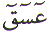

The Arabic letter
Ayn ( ) has no equivalent sounding letter
in the English alphabet. The initial emphasis on the A in Ayn
is from the throat. The position of the letter Ayn (
) has no equivalent sounding letter
in the English alphabet. The initial emphasis on the A in Ayn
is from the throat. The position of the letter Ayn ( )
in the normal Arabic character set is 18. In the numerical character
set, Abjad, Ayn (
)
in the normal Arabic character set is 18. In the numerical character
set, Abjad, Ayn ( ) has the value
of 70. This article is about the spiritual meaning of the letter
Ayn (
) has the value
of 70. This article is about the spiritual meaning of the letter
Ayn ( ).
).
The letter Ayn ( ) is one of the Muqattaat letters.
That is, it is used as a letter in an opening verse of a chapter
in the Quran. The letter Ayn (
) is one of the Muqattaat letters.
That is, it is used as a letter in an opening verse of a chapter
in the Quran. The letter Ayn ( )
is used twice as a Muqattaat letter. First in Chapter 19 Maryam,
and next in Chapter 42 Ash Shuraa of the Quran. Why is the letter
Ayn (
)
is used twice as a Muqattaat letter. First in Chapter 19 Maryam,
and next in Chapter 42 Ash Shuraa of the Quran. Why is the letter
Ayn ( ) used in these two Chapters?
What does the letter Ayn (
) used in these two Chapters?
What does the letter Ayn ( )
signify?
)
signify?
First of all let us see
where and how the letter Ayn ( )
is used as Muqattaat Letter in the Quran:
)
is used as Muqattaat Letter in the Quran:

There is great beauty and perfection in the above verses from both the chapters. The initial verse in Chapter 19 is a recital of Mercy as stated by the second verse. The beauty of Chapter 42 is very subtle.
Chapter 42
Verse 1: Ha Meem 
Verse 3: Ends with Al Hakeem
- The Wise which is an Attribute of Allah starting with the Letter
Ha ( ). Signalling towards the Letter
Ha (
). Signalling towards the Letter
Ha ( ) in verse 1.
) in verse 1.
Verse 2: Ayn Seen Qaf 
Verse 4: Ends with Al Azeem
- The Most Great which is also an Attribute of Allah starting
with the Letter Ayn ( ).
Signalling towards the Letter Ayn (
).
Signalling towards the Letter Ayn ( )
in verse 2. The first reference is Chapter 19 named Maryam. Who
is Maryam () ? Maryam () is the pure mother of Isa - Jesus
(). That is the clue here.
)
in verse 2. The first reference is Chapter 19 named Maryam. Who
is Maryam () ? Maryam () is the pure mother of Isa - Jesus
(). That is the clue here.  Isa (Jesus) is
one of the Messengers of Allah. The name Isa
Isa (Jesus) is
one of the Messengers of Allah. The name Isa  starts
with the Letter Ayn (
starts
with the Letter Ayn ( ).
His birth was a Miracle of Allah. Let us see what Allah tells
us in the Quran.
).
His birth was a Miracle of Allah. Let us see what Allah tells
us in the Quran.
Allah chose Maryam (Mary) for a Miracle. This is mentioned further along the chapter.
Allah created  Isa
- Jesus () by the Miracle of the Command KUN ("BE")
and it is. And where have we seen the Letter Kaaf (
Isa
- Jesus () by the Miracle of the Command KUN ("BE")
and it is. And where have we seen the Letter Kaaf ( )
for KUN ? In Chapter 19 of course. Just
for completeness, we shall also look at the following two verses
)
for KUN ? In Chapter 19 of course. Just
for completeness, we shall also look at the following two verses
And Allah created Isa
(Jesus) from Maryam (Mary ) just by the Command "BE".
Remember! Creation from Meem ( ) by
Rabb (See book on Letter Meem). Another way to look at it is Chapter
19 Verse 21 (19 + 21) = 40 = Meem (
) by
Rabb (See book on Letter Meem). Another way to look at it is Chapter
19 Verse 21 (19 + 21) = 40 = Meem ( ). We
the Muslims do not believe in the crucifixion of
). We
the Muslims do not believe in the crucifixion of  Isa
(Jesus ). We believe in what Allah tells us in the Quran:
Isa
(Jesus ). We believe in what Allah tells us in the Quran:
Chapter 42 Verse 2: Ayn
Seen Qaf is odd ! It is the
only Verse of Muqattaat Letters which is not the FIRST Verse of
a chapter. In Chapter 42 the first Verse is Ha Meem  and Ayn Seen Qaf is Verse 2. Chapter
19 Verse 1 contains 5 Letters, so why did Allah decide that Chapter
42 should have 2 Verses of Muqattaat Letters instead of 1 Verse
of 5 Letters ? Allah wanted us to spot this odd Verse. Why ?
and Ayn Seen Qaf is Verse 2. Chapter
19 Verse 1 contains 5 Letters, so why did Allah decide that Chapter
42 should have 2 Verses of Muqattaat Letters instead of 1 Verse
of 5 Letters ? Allah wanted us to spot this odd Verse. Why ?
The Verse starts with
the Letter Ayn ( ). Therefore
it is connected with the
). Therefore
it is connected with the  Isa
- Jesus (). Isa () is the only Messenger of Allah
that will return to the earth in human form before the Day of
Judgement.
Isa
- Jesus (). Isa () is the only Messenger of Allah
that will return to the earth in human form before the Day of
Judgement.
When is that ? We do
not know. Allah Knows. Since Isa - Jesus () has spent the initial part of
his life on this earth, that has been distinguished by the Letter
Ayn ( ) in Verse 1 Chapter 19
) in Verse 1 Chapter 19 .
.
Since we Muslims believe
that  Isa - Jesus () will return one day as an Imam,
this has been visually shown in the Quran as Verse 1
Isa - Jesus () will return one day as an Imam,
this has been visually shown in the Quran as Verse 1  followed
by Verse 2 . This is the second coming of Isa - Jesus (). Where as the Jews are waiting
for a Messenger of Allah, we the Muslims have been told there
are no more Messengers after Muhammad
followed
by Verse 2 . This is the second coming of Isa - Jesus (). Where as the Jews are waiting
for a Messenger of Allah, we the Muslims have been told there
are no more Messengers after Muhammad  .
The other interesting point about all this is that after Verse
1
.
The other interesting point about all this is that after Verse
1  , there is a PERIOD, a FULL STOP.
Then the Letter Ayn (
, there is a PERIOD, a FULL STOP.
Then the Letter Ayn ( )
follows the Letter Meem.
)
follows the Letter Meem.
To put it another way,
After Muhammad  there is period
of time and there is a stop or a Seal on the Messengers of Allah.
Allah is not going to send any more Messengers. After this 'time
period' Isa - Jesus () will return and follow the Guidance
of Allah - The Quran and the Sunnah of Muhammad
there is period
of time and there is a stop or a Seal on the Messengers of Allah.
Allah is not going to send any more Messengers. After this 'time
period' Isa - Jesus () will return and follow the Guidance
of Allah - The Quran and the Sunnah of Muhammad  .
This is visually displayed as the Letter Ayn (
.
This is visually displayed as the Letter Ayn ( )
following the Letter Meem (
)
following the Letter Meem ( ). That
is the beauty of the Quran. Manifest signs elude us until Allah
wants us to see them when the time is right.
). That
is the beauty of the Quran. Manifest signs elude us until Allah
wants us to see them when the time is right.
May Allah have Mercy on us all and guide us on the right path. Ameen.
| BACK |